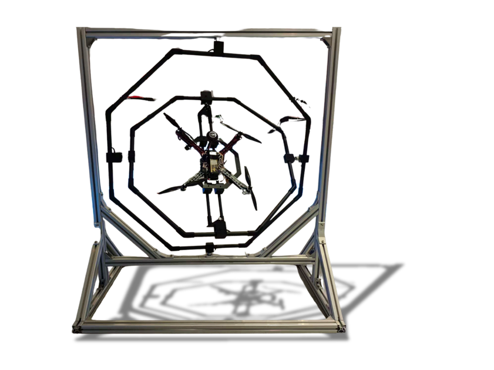

AeroBOT-Z2 无人机综合调试平台
专为无人机调试场景设计的专业工具软件与硬件台架，聚焦PID参数实时配置与飞控姿态可视化监测。

产品概述
AeroBOT-Z2 无人机综合调试平台是一款专为无人机研发与调试设计的专业工具。针对无人机在研发进程中频繁开展飞行测试存在设备损毁及环境风险的痛点，本平台能够在横滚（Roll）、俯仰（Pitch）和偏航（Yaw）三个轴向上实现 360° 自由转动，安全且高效地模拟真实飞行状态。
系统采用轻量化架构设计，仅需简单的参数配置即可快速适配不同型号无人机的定制化调试需求，大幅提升调试效率与数据准确性，同时也可用于 eVTOL 飞控系统的研发测试环节。
核心功能
PID参数实时配置：支持对无人机飞控系统的PID参数进行在线实时调整，快速响应控制策略变化。
飞控姿态角可视化监测：通过软件界面直观展示无人机当前的姿态角度，辅助工程师进行状态判断。
台架姿态角精准采集：硬件台架具备高精度传感器，能够精准采集台架在三个轴向的实际转动角度。
全向转动模拟：支持横滚、俯仰、偏航三个轴向的 360° 自由转动，全方位模拟飞行姿态。
产品特点
结构稳固且轻量化：采用铝合金和碳纤维复合材料制造，兼顾结构强度与自身重量控制。
高精度测量：具备高精度的三轴姿态角度测量能力，确保测试数据的可靠性。
国内唯一全向转动：国内唯一可实现三轴全向转动的调参台，突破传统调试限制。
工业级通讯：采用工业级CAN通讯网络，数据传输稳定可靠，抗干扰能力强。
直连飞控接口：支持直连飞控接口进行调节，有效节省布线繁琐问题，操作更便捷。
基本配置参数
应用价值
AeroBOT-Z2 解决了无人机研发过程中实际飞行测试风险高、成本大的问题。通过地面台架模拟，研发团队可以在安全的环境下对飞控系统进行深度调试和验证。
该平台不仅适用于常规无人机的动力与飞控测试，也能完美适配 eVTOL（电动垂直起降飞行器）等新型航空器的研发测试环节，是实验室建设不可或缺的精密测试设备。
适用场景
适用于无人机研发实验室、飞控系统调试、eVTOL 研发测试、高校航空类专业教学实验以及无人机动力系统性能验证场景。